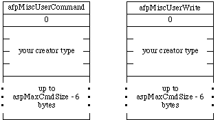

|
|
This Technical Note discusses a scheme for arbitrating the use of the
afpMiscUserCommand and afpMiscUserWrite AppleTalk Filing
Protocol (AFP) commands.
Inside Macintosh Volume V lists two AFP command codes that are reserved for
developers. They are afpMiscUserCommand (call number 191) and
afpMiscUserWrite (call number 254). Several developers have asked that
Apple arbitrate the use of those two AFP calls. This Technical Note describes
our recommended solution.
[Sep 01 1992]
|
Introduction
Because afpMiscUserCommand and afpMiscUserWrite are reserved for developers, the format of the AFP request and reply blocks are undefined except for the first byte of the request block which contains the AFP call number. If the request block is further defined to include a word-aligned long value, that long value can be used to identify a specific developer request.
Since most developers have probably already been assigned a unique 4-byte file
creator type, we suggest reusing that creator type for the long value. Figure 1
shows the request blocks for afpMiscUserCommand and
afpMiscUserWrite with the creator type value. The value of
aspMaxCmdSize in the figure is returned by the ASPGetParms function.

Figure 1. afpMiscUserCommand and afpMiscUserWrite Request Blocks With Creator Type Identifier
Back to top
References
Inside Macintosh, Volume V, The AppleTalk Manager
M.NW.BorrowedAFP
Back to top
Downloadables
|

|
Acrobat version of this Note (92K)
|
Download
|
Back to top
|